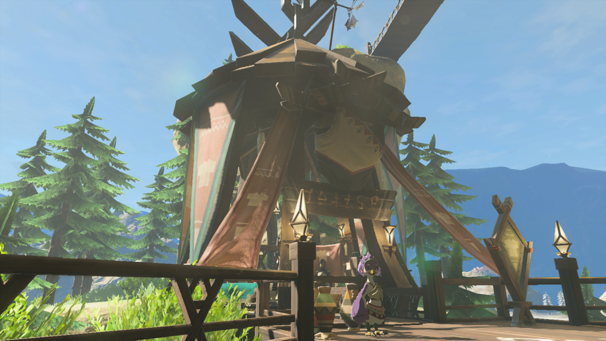

图：风之贤者丘栗——打完急冻盖拉后立誓。
先说结论：找人、拿弓、登天
四地调查先去利特村：暴风雪封了村子，丘栗和村长吵了一架飞走了。先找村长特巴，再去村北找哈茨、穿海布拉山南岳洞窟，在塔隆托峰的雪松下找到丘栗，帮他拿回被空鳐叼走的弓，借他的疾风冲刺登上天空的风之神殿，转动五座风车、击败急冻盖拉，暴风雪就散了。
| 阶段 | 要做的事 |
|---|---|
| 第一段：去利特村 | 从监视堡垒往西北走，过白诘报社的断桥，到村顶找特巴 |
| 第二段：找哈茨穿洞窟 | 村北哈茨小屋问下落，穿海布拉山南岳洞窟上山 |
| 第三段：雪松下找丘栗 | 塔隆托峰孤松下找到丘栗，射下空鳐拿回弓，丘栗同行 |
| 第四段：登天进神殿 | 借丘栗的风爬浮空遗迹链，跳进风暴眼落到风之神殿甲板 |
| 第五段：五座风车 + 首领 | 转动五座风车，击败急冻盖拉，拿心之容器与丘栗的誓言 |
接取与奖励
| 项目 | 内容 |
|---|---|
| 接取 | 监视堡垒接下四地调查后，去利特村 |
| 位置 | 海布拉地区 · 利特村 |
| 奖励 | 风之贤者丘栗加入、疾风冲刺、心之容器、丘栗的誓言 |
| 后续 | 利特村暴风解除；回监视堡垒继续其他三条线 |
出发前准备
| 准备 | 说明 |
|---|---|
| 耐寒 | 利特村 1 级够用；登天上风暴圈最好凑够 2 级（雪地套上衣 + 初始空岛的古代暖暖护腿，或暖暖料理） |
| 雪地套 | 利特村勇猛之喙店有卖，上衣 500 卢比 |
| 火焰果 | 烧洞窟荆棘、烧冰；贴箭上用 |
| 箭 | 打风车机关、打首领弱点，多带 |
| 木材与打火石 | 融冰拿宝箱用（可选） |

图：勇猛之喙——利特村的防具店，雪地套上衣 500 卢比，登天之前先来一件。
第一步：去利特村
1从监视堡垒往西北走。新塞雷尼马厩、林德尔大桥鸟望塔、塔邦挞大桥马厩、白诘报社，顺路都能点亮。
2报社前断桥过不去。把海拉鲁松果扔进篝火，乘上升气流滑翔过去。
3到村先点亮加塔基斯神庙。村里孩子在练风之神殿的歌。
4到村顶找特巴。村长特巴、丘栗和萨基三人正为暴风雪吵架，丘栗一气之下飞走了，任务开始。

图：白诘报社——利特村外的最后一站，断桥边扔松果进篝火，乘上升气流滑过去。
第二步：找哈茨、穿海布拉山南岳洞窟
1任务标记指向村北的哈茨小屋。哈茨说丘栗去了海布拉山南岳洞窟。
2洞窟里荆棘挡路。火焰果箭烧掉。
3冻住的水塘。跳上去踩四下踩碎冰，露出下面的上升气流，滑上去。
4从洞窟另一头出来。格萨内说丘栗飞向山顶的孤松。
第三步：雪松下找到丘栗、拿回弓
1爬上塔隆托峰。山顶孤松下找到丘栗。
2丘栗的弓被一只空鳐叼走了。丘栗教你疾风冲刺（按 A 召唤一阵风）。
3借风滑向东边的平台，射下空鳐，拿回弓。丘栗加入同行，接下来全程靠他的风。
第四步：登天、进风之神殿
1跟着丘栗爬浮空遗迹链（上升岛链）。疾风冲刺 + 通天术交替上。
2路过玛雅乌梅基斯神庙先点亮。当传送点。
3穿过云层，跳进风暴眼。落到风之神殿（暴风方舟号）甲板上。
第五步：五座风车
先调查甲板中央的终端：五座风车的位置标在地图上，还解锁一个传送点。五座风车任意顺序，都要用丘栗的疾风冲刺吹动。
| 风车 | 怎么开 |
|---|---|
| 主桅顶 | 乘中央上升气流到最高桅杆，究极手开舱盖跳下去，躲红外线激光，吹北边台子上的风车 |
| 甲板拉杆门 | 北边两间锁着的屋子，西间拉拉杆开门；东间拉杆断了，究极手把冰柱粘上去当把手，拉开门吹风车 |
| 东侧窗 | 从船东侧滑翔下去，躲船舷大炮，炸开结冰的门；屋里用倒转乾坤转大轮、拿冰柱补齿轮，开门吹风车 |
| 西侧 | 从船西侧跳进洞口，躲激光、融冰拿宝箱；用四块石板拼好缺扇叶的风车，吹动风开门，上去吹风车 |
| 船底 | 从东侧滑下船，落到带灯的小平台上，打掉魔像，吹风车 |
五座风车全开后，回甲板中央祭坛，首领战开始。神殿里的宝箱顺手拿：士兵 III 之刃、蛋白石、蓝宝石、左纳乌盾、箭×10、红宝石、队长 II 收割者。
首领战：急冻盖拉
1全程在空中打。开弓时时间变慢，瞄准它身上的冰晶弱点；每处弱点三箭（两箭破冰、一箭打弱点），火果附魔只要两箭。
2它会钻进传送门再钻出来。撞上就掉血；丘栗会喊“在你下面！”之类的提醒，注意听。
3它还会从头顶射尖刺。借丘栗的风躲开，尖刺射完就能俯冲穿冰。
4三处弱点全打掉后进入第二阶段。多了龙卷风，躲开再打，办法一样。
5打完拿心之容器。回祭坛看剧情：丘栗成为风之贤者，暴风雪解除。

图：风之贤者丘栗——打完急冻盖拉，丘栗立下誓言，利特村的暴风雪也散了。
容易翻车的地方
- 不备耐寒就往利特村走——暴风雪里冻掉血；登天之前最好凑够 2 级耐寒。
- 断桥边不知道怎么过——把海拉鲁松果扔进篝火，乘上升气流滑过去，别硬跳。
- 洞窟冻住的水塘硬走——跳上去踩四下踩碎冰，露出上升气流。
- 风之神殿里没丘栗就想开风车——风车只能用丘栗的疾风冲刺吹。
- 首领战硬扛尖刺和龙卷风——借丘栗的风躲，尖刺射完再俯冲穿冰。
一句话总结
找村长特巴、穿洞窟、在雪松下找到丘栗拿回弓，借他的风登上风之神殿，转动五座风车、击败急冻盖拉——利特村的暴风雪就散了。